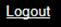

Logout functionality is available for all users.
To log out of the DCTrackMobileWeb, click  Logout from the DCTrackMobileWeb menu bar. You will be logged out of the DCTrackMobileWeb and the application will close.
